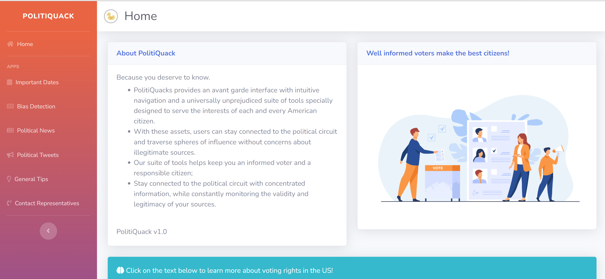
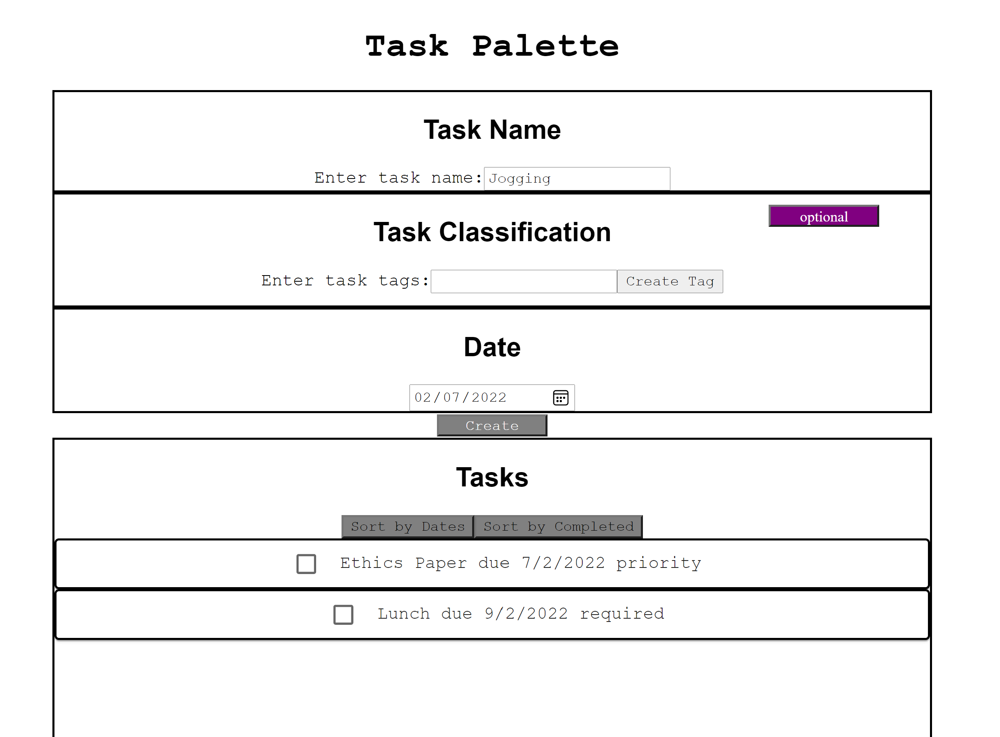
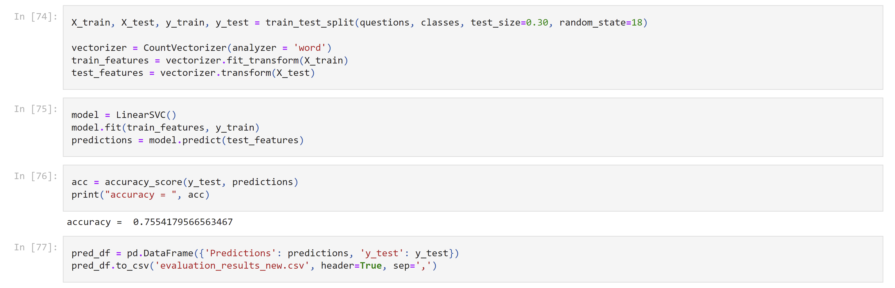

PolitiQuack
PolitiQuack is a multifaceted interface that seeks to concentrate relevant, reliable data regarding the US 2020 Presidential Election. The features offered include a Fake News Detector, unique party-specific news and updates, FAQs and voter tips, as well as a customized state-wise representative contact map.
Check out our codebase, which includes more information about the project: https://github.com/Peter-Feng-32/PoliticalDashboard
Tech Defense
Tech Defense is a tower defense game built with Java and JavaFX, particularly using the FXML and FXGL libraries. Following the Agile Developmental Process, my team and I incorporated elements of procedural generation for random paths and multi-threading to run processes simultaneously.

Check out a demo video for our game: https://www.youtube.com/watch?v=4uMuu8ix6Vk
TaskPalette
Built a task to-do list dashboard using React, Javascript, and TypeScript. Individual tasks are assigned to a due date and can be associated with custom tags. Registered tasks can be sorted based on earliest due date, completed status, or both. HTML/CSS for style.
Check out my codebase: https://github.com/aditya-kumaran/fall2021-dev-takehome
NLP QA Classifier
Built, trained, and tested an NLP classifier to recognize intent of question-style input dataset and accordingly sort into classes. Used CountVectorizer from scikit-learn to vectorize individual words and map their frequency to classes. Modeled through LinearSVC. Analyzed through iris dataset and sklearn metrics. Further documentation available in pdf form in repository.
Accuracy according to sklearn and iris dataset = 75.54%
Check out my codebase: https://github.com/aditya-kumaran/vectorClassifier